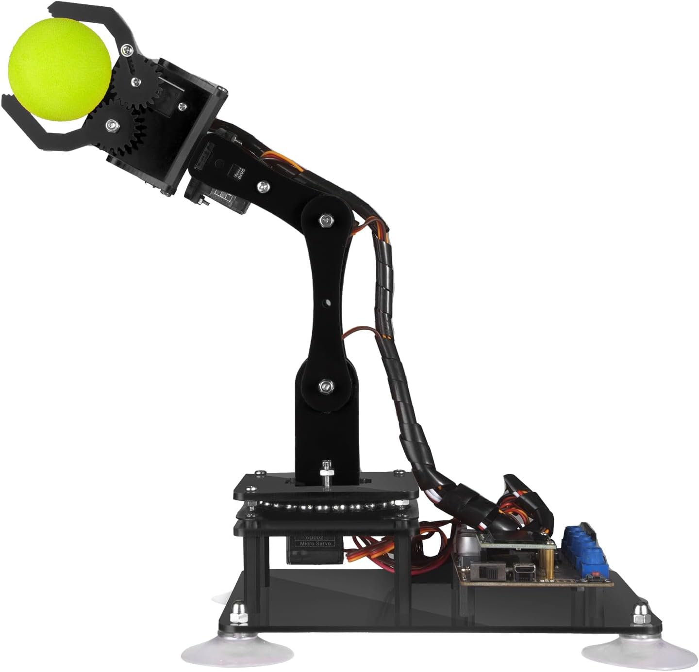

Braccio robotico Arduino: guida completa per capire come funziona

Un braccio robotico Arduino è uno dei progetti più interessanti per chi vuole avvicinarsi alla robotica in modo pratico. Permette di imparare come lavorano servomotori, sensori, schede di controllo e codice, ma soprattutto aiuta a capire come tanti elementi diversi possano collaborare per creare un movimento preciso.
Molte persone scoprono il mondo della robotica partendo proprio da un braccio robotico Arduino perché è un progetto visibile, concreto e abbastanza semplice da capire. Quando il braccio si muove, ruota o afferra un oggetto, si vede subito il risultato di ciò che è stato programmato.
Cos’è un braccio robotico Arduino
Un braccio robotico Arduino è una struttura meccanica composta da più articolazioni controllate da motori. Ogni movimento dipende da un codice caricato su una scheda Arduino, che invia istruzioni ai servomotori.
A seconda del modello, un kit può avere 2, 4, 5 o 6 assi. Più assi sono presenti, maggiore sarà la libertà di movimento.
I modelli più semplici vengono usati per imparare, mentre quelli più avanzati possono eseguire piccoli compiti come spostare oggetti, disegnare, imitare movimenti o ripetere sequenze.
Quali componenti servono
Per costruire un progetto di questo tipo servono alcuni elementi fondamentali:
- Scheda Arduino
- Servomotori
- Struttura del braccio
- Alimentazione
- Sensori opzionali
- Software di programmazione
I servomotori sono la parte più importante perché permettono al braccio di muoversi in modo controllato. La scheda Arduino, invece, coordina tutti i movimenti.
Perché piace così tanto
Il successo del braccio robotico Arduino dipende dal fatto che unisce elettronica, meccanica e programmazione in un solo progetto.
È più coinvolgente rispetto ai classici LED o sensori perché permette di vedere un movimento reale. Questo rende più facile capire gli errori, correggere il codice e migliorare il progetto nel tempo.
Molti studenti iniziano con kit molto semplici e poi passano a versioni più avanzate con display OLED, telecomando, controllo da PC o persino riconoscimento vocale.
Cosa si può fare con un braccio robotico Arduino
Le possibilità cambiano in base ai componenti usati e al livello di esperienza.
Un braccio robotico Arduino può:
- Sollevare piccoli oggetti
- Ripetere movimenti memorizzati
- Disegnare
- Seguire una sequenza automatica
- Essere controllato da joystick o PC
- Reagire a sensori
Queste funzioni sono utili sia per imparare sia per fare piccoli esperimenti di automazione.
Quali articoli approfondire dopo
Chi vuole capire meglio come funziona un braccio robotico Arduino può approfondire tre aspetti specifici.
Il primo riguarda i componenti principali, come servomotori, alimentazione e scheda Arduino.
Il secondo riguarda gli usi pratici, quindi cosa si può fare davvero con questi kit nella vita reale.
Il terzo riguarda errori comuni, falsi miti e problemi che spesso emergono quando si prova a costruire un progetto di questo tipo.
Conclusione
Un braccio robotico Arduino è uno dei modi migliori per entrare nel mondo della robotica. Permette di imparare gradualmente, vedere risultati concreti e costruire qualcosa di davvero utile.
Che si tratti di un piccolo kit per principianti o di un progetto più avanzato, il valore principale resta lo stesso: imparare facendo.
FAQ
Cos’è un braccio robotico Arduino?
È un sistema meccanico controllato da una scheda Arduino che permette di eseguire movimenti programmati.
A cosa serve un braccio robotico Arduino?
Può essere usato per imparare robotica, automazione, programmazione e controllo dei motori.
Quanti motori servono?
Dipende dal numero di assi. I modelli più comuni usano da 4 a 6 servomotori.
È adatto ai principianti?
Sì, soprattutto se si parte da un kit già pronto con tutorial e codice incluso.
Serve saper programmare?
No, ma conoscere le basi di Arduino aiuta molto.